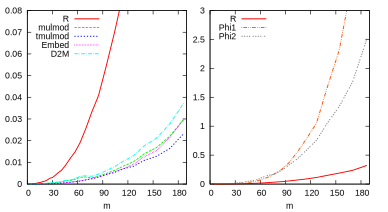

Fast Arithmetic for the Algebraic Closure of Finite Fields
Luca De Feo¹, Javad Doliskani² and Éric Schost²
¹Université de Versailles, ²University of Western Ontario
Get these slides
at defeo.lu/ff_compositum/
 Luca De Feo,
2014, licensed under
CC-BY-SA
4.0.
Luca De Feo,
2014, licensed under
CC-BY-SA
4.0.
Consider a finite field with p elements.
What does its algebraic closure look like?
Past work on $\ell$-adic towers
Goal: all operations quasi-linear in data size.
- $\ell=2$:
- Doliskani & Schost 2014;
- $\ell = p$:
- De Feo & Schost 2009;
- $\ell$ small:
- De Feo, Doliskani & Schost 2013;
How to glue the towers together?
- Different techniques for different $\ell$
⟶ no natural framework to combine them. - Need a generic solution.
This work: Composita of fields
- $k$ a field (say finite, but not necessarily),
- $m, n$ coprime integers.
Representation
- Let $P, Q$ be irreducible polynomials,
- $\deg P = m,$ $\deg Q = m,$ $\deg R = mn$
- What choice for $R$?
Operations
- Project: $K[Z]/(R) \twoheadrightarrow K[X]/(P)$ (in particular Embed-1).
- Isomorphism: $K[Z]/(R) \longleftrightarrow K[X,Y]/(P,Q)$ (both ways).
Naive solution (linear algebra): $O\left((mn)^ω\right)$
Target complexity: $\tilde{O}(mn)$
Our results
| Embeding | Projection | Isomorphism |
|---|---|---|
|
|
Techniques
- Composed product,
- Transposed algorithms and dual bases.
Consider this naive algorithm to reduce modulo a fixed polynomial:
$5X^5 + 4X^4 + 3X^3 + 2X^2 + X \mod X^2 - X - 1$
↓
$X(X(X(X(X(5)+4)+3)+2)+1) \mod \dots$
INPUT:
for
=
+=
=
+=
OUTPUT:
INPUT:
for
=
=
=
+=
OUTPUT:
Linear sequence extension
Modular reduction
The transpose of modular multiplication
Let
- $A,B,C$ polynomials, $\deg A,B < \deg C$,
- Compute $AB \mod C$.
$X(X(X(X(X(5B)+4B)+3B)+2B)+B) \mod C$
What transposition?
This function
is not even linear!
Transposed multiplication
$k=\F_2$
↓
Berlekamp's bit serial
multiplication
Some abstract nonsense...
Transposed coefficients live in a dual
space
$\begin{aligned} \mathrm{mul}^{\phantom{*}} : \phantom{()^*} k^n \times k^n &\to k^n\\ \color{red}{\mathrm{mul}^*} : \color{red}{(k^n)^*} \times k^n &\to \color{red}{(k^n)^*} \end{aligned}$
Transposed algorithms act on dual inputs and outputs.
Most powerful when we have an identification
dual ⟷ some other space
it turns out we have one for algebraic field extensions.
Let $L/k$ be a finite field extension, the trace $\Tr_{L/k}$ defines a non-degenerate bilinear form
$〈a,b〉 = \Tr(ab)$
identifying $L$ to its dual space $L^*$.
Let $f:L\to M$ be an isomorphism of extensions, by
definition
$$\Tr_M(f(a)\color{red}{b}) = 〈f(a),\color{red}{b}〉_M =
〈a,\color{red}{f^*(b)}〉_L =
\Tr_L(a\color{red}{f^*(b)}).$$
By non-degeneracy of the trace $$\frac{f(a)}{a} =
\color{red}{\frac{f^*(b)}{b}}$$ for all
$a,\color{red}{b}$, hence
$$f^* = f^{-1}$$
Wait, what?!
Yes $f^* = f^{-1}$, but
- if $f$ is defined on a fixed basis $ξ$, (e.g. $ξ=(x^{i})_i$)
$f^*$is defined on thedualbasis$ξ^*$.
Moral: good algorithm for $f$
⟷ good algorithm for $f^*$
(up to a
change of basis).
Pro-tip: conversion monomial
⟷ dual is $O(\M(d)) ⊂ \tilde{O}(d)$
[Rouiller '99, Bostan, Salvy & Schost '01]
Important: coefficients of $a∈L$ on
the dual monomial basis are
$$\Tr(a), \Tr(ax), \dots, \Tr(ax^{d-1}).$$
$M=K[X]/(P)$ has two useful bases $$ξ = (1, x, \dots, x^{m-1}),\qquad \color{red}{ξ^* = (1^*,x^*,\dots,(x^{m-1})^*)}.$$ $N=K[Y]/(Q)$ has two $$υ = (1, y, \dots, y^{n-1}),\qquad \color{red}{υ^* = (1^*,y^*,\dots,(y^{n-1})^*)}.$$ $L=K[X,Y]/(P,Q)=K[Z]/(R)$ has six! $$ξ⊗υ,\quad \color{red}{ξ^*}⊗\color{red}{υ^*},\qquad \color{red}{ξ^*}⊗υ,\quad ξ⊗\color{red}{υ^*},$$ $$ζ = (1, z, \dots, z^{mn-1}),\qquad \color{red}{ζ^* = (1^*,z^*,\dots,(z^{mn-1})^*)}.$$ We want to embed, say, $M\hookrightarrow K[Z]/(R)$.
Embed : $M_{ξ^*} \to L_{ζ^*}$
Let $a∈M_{ξ^*}$ and $\bar{a}$ its image in
$L_{ζ^*}$,
$$\begin{aligned}
a\; &= \left(\Tr_M(a), \dots, \Tr_M(ax^{m-1})\right)\\
\bar{a}\; &= \left(\Tr_L(\bar{a}),\dots\dots\dots\dots\dots, \Tr_L(\bar{a}z^{nm-1})\right)\\
&= \left(\Tr_L(\bar{a}),\dots\dots\dots\dots\dots, \Tr_L(\bar{a}(xy)^{nm-1})\right)\\
&= \left(\Tr_M(a)\Tr_N(1),\dots\dots\dots, \Tr_M(ax^{nm-1})\Tr_N(y^{nm-1})\right)
\end{aligned}$$
last equality is a consequence of $L=M⊗N$.
Algorithm
Input: $a∈M_{ξ^*}$, $1∈N_{υ^*}$
Output: $\bar{a}∈L_{ζ^*}$, the image of $a$ in $L$
- Extend $a$ → $(\Tr_M(ax^i))_{i< mn}$ $O(\M(m)n)$
- Extend $1$ → $(\Tr_N(y^i))_{i< mn}$ $O(m\M(n))$
- Return $(\Tr_M(ax^i)\Tr_N(y^i))_{i< mn}$ $O(mn)$
Project : $L_{ζ} \to M_{ξ}$
Is obtained by transposing
Embed (with some trickery).
Isomorphism : $L_{ξ^*⊗υ^*} \to L_{ζ^*}$
- $n$ calls to
Embed$O(\M(m)n^2)$ - Baby-steps giant-steps (à la Brent & Kung) $\tilde{O}(mn^{(ω+1)/2})$.
Implementation in C + Flint + Sage
github.com/defeo/sage/tree/ff_compositum
- Lazily computes monomial/dual representations.
